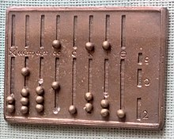

Komputer jest to urządzenie elektroniczne przeznaczone do przetwarzania informacji,
które można przedstawić za pomocą ciągu cyfr.
Wcześniejsze komputery były nazywane też jako mózg elektronowy lub maszyna cyfrowa.
Mimo że potocznie komputerami nazywa się współczesne komputery osobiste, to komputerami
są także analogowe maszyny używane w na początku XX.
Już w starożytności były podejmowane próby stworzenia urządzeń,
które ułatwiały by wykonywanie obliczeń. Pierwszym takim urządzniem
było liczydło zwane Abakusem. Najstarsze urządzenia tego typu są datowane na 3000 p.n.e.
Liczydło składało się z deski z wyżłobionymi rowkami,które symbolizowały kolejne
potęgi dziesięciu. Abokus ułatwiał liczenie i był używany w Rzymie
i Grecji od 440 p.n.e. do XVIII wieku.

Rekonstrukcja Rzymskiego liczydła Abakus
W latach między 205-190 p.n.e, w Grecji zbudowano tzw. mechanizm z Antykithiry służacy
do obliczania pozycji ciał niebieskich. Urządzenie jest uznawane za pierwowzór komputera
analogowego. W roku 1642 Blaise Pascal opracował pierwszy na świecie kalkulator mechaniczny,
który mógł dodawać i odejmować. W 1672 roku Gottlieb Wilhelm von Leibniz stworzył
jego ulepszoną wersję która mogła także mnożyć, dzielić i pierwiastkować.
Przez stulecia powstawały kolejne urządznia mechaniczne ułatwiające wykonywanie
obliczeń lub służyły do wykonywania konkretnych czynności.
Urządzeniem takim był np. warsztat tkacki opracowany we Francji w 1801 roku przez
Josepha Marie Jacquarda. Urządzenie to, za pomocą programu zapisanego na drewnianych
kartach, automatycznie splatało włókna w określony, zaprogramowany i powtarzalny sposób.
W XX wieku, dzięki rozwojowi innych dziedzin nauk, możliwe było opracowanie urządzeń
elektrycznych i elektronicznych, które znamy obecnie.
Strona 2 - Najważniesze wydarzenia w historii komputerów
Strona 3 - Budowa komputera